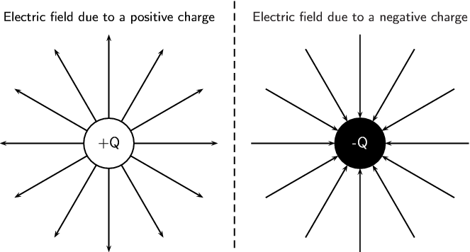

We have seen in the previous section that point charges exert forces on each other even when they are far apart and not touching each other. How do the charges `know' about the existence of other charges around them?
The answer is that you can think of every charge as being surrounded in space by an electric field. The electric field is the region of space in which an electric charge will experience a force. The direction of the electric field represents the direction of the force a positive test charge would experience if placed in the electric field. In other words, the direction of an electric field at a point in space is the same direction in which a positive test charge would move if placed at that point.
Electric field
A region of space in which an electric charge will experience a force. The direction of the field at a point in space is the direction in which a positive test charge would moved if placed at that point.
Representing electric fields
We can represent the strength and direction of an electric field at a point using electric field lines. This is similar to representing magnetic fields around magnets using magnetic field lines as you studied in Grade 10. In the following we will study what the electric fields look like around isolated charges.
Positive charge acting on a test charge
The magnitude of the force that a test charge experiences due to another charge is governed by Coulomb's law. In the diagram below, at each point around the positive charge, , we calculate the force a positive test charge, , would experience, and represent this force (a vector) with an arrow. The force vectors for some points around are shown in the diagram along with the positive test charge (in red) located at one of the points.
At every point around the charge , the positive test charge, , will experience a force pushing it away.
This is because both charges are positive and so they repel each other. We cannot draw an arrow at every point but we include enough arrows to illustrate what the field would look like. The arrows represent the force the test charge would experience at each point. Coulomb's law is an inverse-square law which means that the force gets weaker the greater the distance between the two charges. This is why the arrows get shorter further away from .
Negative charge acting on a test charge
For a negative charge, , and a positive test charge, , the force vectors would look like:
Notice that it is almost identical to the positive charge case. The arrows are the same lengths as in the previous diagram because the absolute magnitude of the charge is the same and so is the magnitude of the test charge. Thus the magnitude of the force is the same at the same points in space. However, the arrows point in the opposite direction because the charges now have opposite signs and attract each other.
Electric fields around isolated charges - summary
Now, to make things simpler, we draw continuous lines that are tangential to the force that a test charge would experience at each point. The field lines are closer together where the field is stronger. Look at the diagram below: close to the central charges, the field lines are close together. This is where the electric field is strongest. Further away from the central charges where the electric field is weaker, the field lines are more spread out from each other.

<code>
(-3,-2.6)(9,3.5)
\pscircle(0,0){.6} \rput(0,0){+Q} \SpecialCoor
\def\arrlines{\psline{->}(0.6;0)(2.6;0)}
\degrees[1.2]
\multido{\n=0.0+.1}{12}{\rput{\n}{\arrlines}}
\rput(0,3){\small Electric field due to a positive charge}
\pscircle[fillstyle=solid, fillcolor=black](6,0){.6} \rput(6,0){\color{white} -Q} \SpecialCoor
\def\arrlines2{\psline{</code>
We use the following conventions when drawing electric field lines:
Arrows on the field lines indicate the direction of the field, i.e. the direction in which a positive test charge would move if placed in the field.
Electric field lines point away from positive charges (like charges repel) and towards negative charges (unlike charges attract).
Field lines are drawn closer together where the field is stronger.
Field lines do not touch or cross each other.
Field lines are drawn perpendicular to a charge or charged surface.
The greater the magnitude of the charge, the stronger its electric field. We represent this by drawing more field lines around the greater charge than for charges with smaller magnitudes.
Some important points to remember about electric fields:
There is an electric field at every point in space
surrounding a charge.
Field lines are merely a representation – they are not
real. When we draw them, we just pick convenient places to
indicate the field in space.
Field lines exist in three dimensions, not only in two dimension as we've drawn them.
The number of field lines passing through a surface is proportional to the charge contained inside the surface.
Electric fields around different charge configurations
We have seen what the electric fields look like around isolated positive and negative charges. Now we will study what the electric fields look like around combinations of charges placed close together.
Electric field around two unlike charges
We will start by looking at the electric field around a positive and negative charge placed next to each other. Using the rules for drawing electric field lines, we will sketch the electric field one step at a time. The net resulting field is the sum of the fields from each of the charges. To start off let us sketch the electric fields for each of the charges separately.
A positive test charge (red dots) placed at different positions directly between the two charges would be pushed away (orange force arrows) from the positive charge and pulled towards (blue force arrows) the negative charge in a straight line. The orange and blue force arrows have been drawn slightly offset from the dots for clarity. In reality they would lie on top of each other. Notice that the further from the positive charge, the smaller the repulsive force, (shorter orange arrows) and the closer to the negative charge the greater the attractive force, (longer blue arrows).
The resultant forces are shown by the red arrows.
The electric field line is the black line which is tangential to the resultant forces and is a straight line between the charges pointing from the positive to the negative charge.
Now let's consider a positive test charge placed slightly higher than the line joining the two charges.
The test charge will experience a repulsive force ( in orange) from the positive charge and an attractive force ( in blue) due to the negative charge. As before, the magnitude of these forces will depend on the distance of the test charge from each of the charges according to Coulomb's law.
Starting at a position closer to the positive charge, the test charge will experience a larger repulsive force due to the positive charge and a weaker attractive force from the negative charge. At a position half-way between the positive and negative charges, the magnitudes of the repulsive and attractive forces are the same. If the test charge is placed closer to the negative charge, then the attractive force will be greater and the repulsive force it experiences due to the more distant positive charge will be weaker. At each point we add the forces due to the positive and negative charges to find the resultant force on the test charge (shown by the red arrows). The resulting electric field line, which is tangential to the resultant force vectors, will be a curve.
Electric field around two like charges (both positive)
For the case of two positive charges and of the same magnitude, things look a little different. We can't just turn the arrows around the way we did before. In this case the positive test charge is repelled by both charges. The electric fields around each of the charges in isolation looks like.
Now we can look at the resulting electric field when the charges are placed next to each other.
Let us start by placing a positive test charge directly between the two charges.
We can draw the forces exerted on the test charge due to and and determine the resultant force.
The force (in orange) on the test charge (red dot) due to the charge is equal in magnitude but opposite in direction to (in blue) which is the force exerted on the test charge due to . Therefore they cancel each other out and there is no resultant force. This means that the electric field directly between the charges cancels out in the middle. A test charge placed at this point would not experience a force.
Now let's consider a positive test charge placed close to and above the imaginary line joining the centres of the charges. Again we can draw the forces exerted on the test charge due to and and sum them to find the resultant force (shown in red). This tells us the direction of the electric field line at each point. The electric field line (black line) is tangential to the resultant forces.
If we place a test charge in the same relative positions but below the imaginary line joining the centres of the charges, we can see in the diagram below that the resultant forces are reflections of the forces above. Therefore, the electric field line is just a reflection of the field line above.
Since has the same charge as , the forces at the same relative points close to will have the same magnitudes but opposite directions i.e. they are also reflections . We can therefore easily draw the next two field lines as follows:
Electric field around two like charges (both negative)
We can use the fact that the direction of the force is reversed
for a test charge if you change the sign of the charge that is
influencing it. If we change to the case where both charges are
negative we get the following result:
When the magnitudes are not equal the larger charge will influence the direction of the field lines more than if they were equal. For example, here is a configuration where the positive charge is much larger than the negative charge. You can see that the field lines look more similar to that of an isolated charge at greater distances than in the earlier example. This is because the larger charge gives rise to a stronger field and therefore makes a larger relative contribution to the force on a test charge than the smaller charge.
In the previous sections we have studied how we can represent the electric fields around a charge or combination of charges by means of electric field lines. In this representation we see that the electric field strength is represented by how close together the field lines are. In addition to the drawings of the electric field, we would also like to be able to quantify (put a number to) how strong an electric field is and what its direction is at any point in space.
A small test charge placed near a charge will experience a force due to the electric field surrounding . The magnitude of the force is described by Coulomb's law and depends on the magnitude of the charge and the distance of the test charge from . The closer the test charge is to the charge , the greater the force it will experience. Also, at points closer to the charge , the stronger is its electric field. We define the electric field at a point as the force per unit charge.
Electric field
The magnitude of the electric field, , at a point can be quantified as the force per unit charge
We can write this as:
where is the Coulomb force exerted by a charge on a test charge .
The units of the electric field are newtons per coulomb: .
Since the force is a vector and is a scalar, the electric field, , is also a vector; it has a magnitude and a direction at every point.
Given the definition of electric field above and substituting the expression for Coulomb's law for :
we can see that the electric field only depends on the charge and not the magnitude of the test charge.
If the electric field is known, then the electrostatic force on any charge placed into the field is simply obtained by rearranging the definition equation:
We need to calculate the electric field a distance from a given charge.
Determine what is
given
We are given the magnitude of the charge and the distance from the charge.
Determine how to approach the problem
We will use the equation:
Solve the problem
Two charges of and are separated by a distance of ~. What is the electric
field strength at a point that is ~ from and ~ from ? The point lies between and .
We need to calculate the electric field a distance from two given charges.
Determine what is given
We are given the magnitude of the charges and
the distances from the charges.
Determine how to approach the problem
We will use the equation:
We need to calculate the electric field for each charge separately and then add them to determine the resultant field.
Solve the problem
We first solve for :
Then for :
We need to add the two electric fields because both are in the same direction. The field is away from and towards .
Therefore,
Two point charges form a right-angled triangle with the point at the origin.
Their charges are
and . The distance between
and
is ~
and the distance between
and
is ~. What is the net electric field measured at from the two charges if they are arranged as shown?
We are required to calculate the net electric field at . This field is the sum of the two electric fields - the field from at and from at .
Determine how to approach the problem
We need to calculate the two fields at , using for the magnitude and determining the direction from the charge signs.
We then need to add up the two fields using our rules for adding vector quantities, because the electric field is a vector quantity.
Determine what is given
We are given all the charges and the distances.
Calculate the magnitude of the fields.
The magnitude of the field from at , which we will call , is:
The magnitude of the electric field from at , which we will call , is:
Vector addition of electric fields
We will use precisely the same procedure as before. Determine the vectors on the Cartesian plane, break them into components in the - and -directions, sum components in each direction to get the components of the resultant.
We choose the positive directions to be to the right (the positive -direction) and up (the positive -direction). We know the electric field magnitudes but we need to use the charges to determine the direction. Then we can use the diagram to determine the directions.
The force between a positive test charge and is repulsive (like charges). This means that the electric field is to the left, or in the negative -direction.
The force between a positive test charge and is attractive
(unlike charges) and the electric field will be in the positive -direction.
We can redraw the diagram illustrating the fields to make sure we can visualise the situation:
The magnitude of the resultant force acting on can be calculated from the forces using Pythagoras' theorem because there are only two forces and they act in the - and -directions:
and the angle, made with the -axis can be found using trigonometry.
We need to calculate the electric field a distance from a given charge. We are given the magnitude of the charge and the distance from the charge. We will use the equation:
Two charges of and are separated by a distance of ~. What is the electric field strength at a point that is ~ from and ~ from ? The point lies between and .
We need to calculate the electric field a distance from two given charges. We are given the magnitude of the charges and the distances from the charges.
We will use the equation:
We need to calculate the electric field for each charge separately and then add them to determine the resultant field.
We first solve for :
Then for :
We need to subtract the two electric fields because they are in opposite directions. The electric fields due to each charge will be towards the charge causing it.
Therefore, in the direction of the ~ charge.